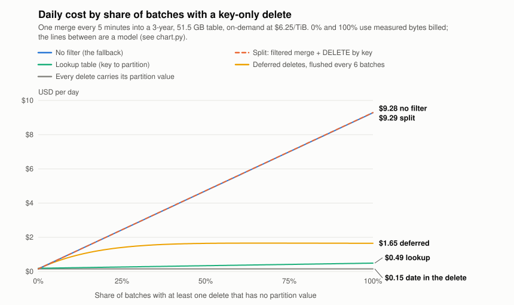

One delete without a date makes a BigQuery merge read the whole table
A measured follow-up to Artie's open benchmark on partition-aware CDC merges: what a key-only delete costs, and which strategy to use.
The problem
- A CDC pipeline copies changes into BigQuery every five minutes with a MERGE.
- BigQuery on-demand bills the data a statement reads.
- Artie's benchmark shows a filter that makes the merge read only the days the batch touches.
- The filter is built from the dates inside the batch.
- A Postgres delete, on default settings, sends only the row's key. No date.
- A batch with one such delete cannot use the filter. It reads the whole table.
Artie's post names this: "Deletes are the one to check." Their benchmark source ran REPLICA IDENTITY FULL, so every delete came with its date. This page measures the default case.
What I measured
Artie's harness, unchanged, on the same table: 3 years, 1,095 daily partitions, 109.5M rows, 51.5 GB. First I reproduced their result. Then each batch got 50 deletes with no date, and I ran four ways of handling it, 12 batches each.
| Way to handle the batch | GB billed per batch | USD per day | Verdict |
|---|---|---|---|
| Fall back to the merge without the filter | 5.670 | 9.28 | fine when rare |
| Filtered merge, plus a separate DELETE by key | 5.675 | 9.29 | no saving |
| Look the date up in a key-to-date table in BigQuery | 0.299 | 0.49 | does not scale |
| Queue the deletes, apply them every 6th batch | 1.007 | 1.65 | recommended |
| Every delete carries its date (Artie's result, reproduced) | 0.094 | 0.15 | best, needs a source change |
All four strategies ended with the same table: 109,503,000 rows, same key fingerprint, same partition layout.

What I recommend
No single fix. Pick the strategy per table, from how its deletes behave.
| The table's deletes | Strategy | Cost on this table |
|---|---|---|
| Carry the date, or there are none | Filter only. Nothing extra. | $0.15 a day |
| Key-only, and rare | Let that one batch fall back. | 3 cents a batch |
| Key-only, and regular | Queue them. Flush on a schedule. | 3 cents a flush |
| The source database can change | REPLICA IDENTITY USING INDEX on (key, date). | $0.15 a day |
Why the queue, and not the lookup table
The lookup table was the cheapest in this test. I still would not build on it.
- Its cost grows with every delete. 50 deletes read about 50 of 3,000 hash buckets. Thousands would read most of the table, twice.
- Old deletes cost far more. With the 50 deletes spread over 50 old days it billed 2.60 GB a batch, not 0.30.
- It can lose a delete. If a row's date changes later, the lookup points at the wrong day. Not tested here.
- It used more slot time than no filter. 167 s against 111 s, median.
The queue behaves differently.
- A flush costs the same whatever is waiting. 5.63 GB with 50 deletes queued. 5.63 GB with 300.
- So the flush interval sets the bill. One flush is 3 cents. Every 6th batch gave $1.65 a day.
- Between flushes the merge is cheap. 0.048 GB, plus 0.021 GB to queue the deletes.
Three more findings
- Rows that change date. A filter built from the new date alone left 100 duplicates out of 100 moved rows. With the old date included, none.
- Wide batches. On the same batch, the filter billed less than no filter at 30, 120 and 365 partitions: 1.41 against 6.84 GB, 5.64 against 10.61, 17.09 against 20.82.
- Dry runs. For any unfiltered merge or delete, the free estimate was the whole table, 51.5 GB. The bill was 5.6 to 20.8 GB. For filtered merges the estimate matched the bill.
What the queue still needs
- Readers see deleted rows until the flush. A view that hides queued keys would fix that. Not measured yet.
- The data is still stored until the flush. That matters for erasure requests.
- Delete, then insert the same key again, inside one flush window. It needs an ordering column. Not tested yet.
- Only one flush interval is measured. Hourly and daily flushes are next.
The number I cannot see
Which row of the recommendation applies depends on one thing: what share of real batches carry a key-only delete? Only someone running production pipelines can answer that.
Limits
- Synthetic data. One table, one region, one run, on-demand pricing.
- Every batch had exactly 50 key-only deletes.
- Bytes billed were the same on every repeat. Slot time was not.